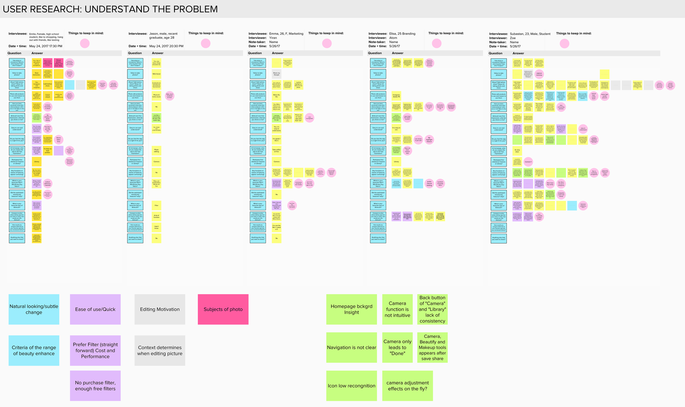
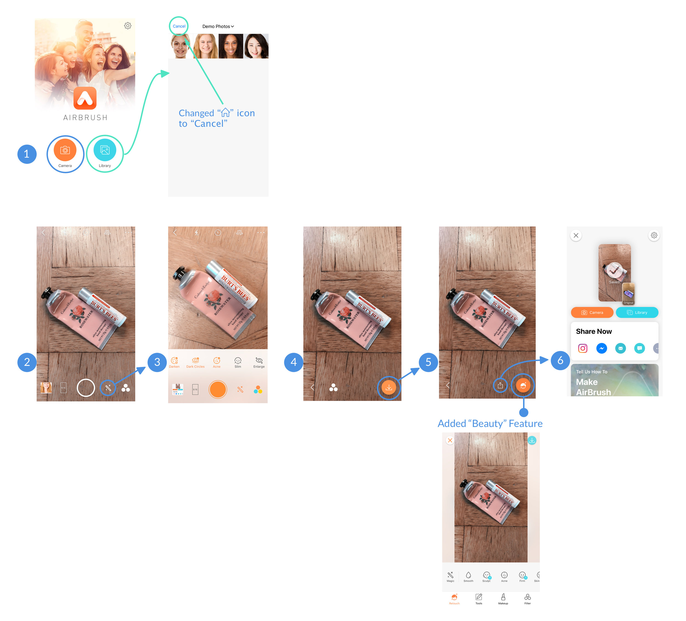

Airbrush is a group usability testing project. Airbrush is a photo editing app designed to be simple to use with advanced natural looking face retouch and enhancement features; target to make every photo worth of sharing.
Airbrush是一个团队可用性测试项目。 Airbrush是一款照片编辑应用程序，设计的目的是简单易用，具有先进的自然外观修饰和增强功能; 目标是使每张照片都值得分享。
My role is UX Researcher. This is a freelance group project for Meitu. Inc, a technology company focused in developing smartphone selfie apps.
我的职责是UX研究员，这是一个为美图公司做的freelance小组项。美图公司专注于开发智能手机自拍应用。
We used two weeks to conduct usability testing including planning, interview, test result analysis, and usability testing report.
我们用两周时间进行可用性测试，包括计划，访谈，测试结果分析和可用性测试报告。
We had a very limited amount of time to find our interviewees to conduct our interview.
It was even harder to find an interviewee who at least have some experience in using photo editing app on a regular bases.
My group members are all from different parts in the world; to schedule a right meeting time for everyone was a tough task.
我们找到受访者进行访谈的时间非常有限。
找到一个至少在定期使用照片编辑应用程序方面有经验的受访者更难。
我的小组成员都来自世界各地; 为每个人安排合适的会议时间是一项艰巨的任务。
To gain insight into the reasons/motivation behind the prevalence of photo enhancement.
To understand the usability issues of main features.
To test on boarding experience, save & share, etc.
To provide possible insights on persona profiling
了解照片增强流行背后的原因/动机。
了解主要功能的可用性问题。
测试新手引导体验、保存与分享等。
提供关于人物剖析的可能见解。
Determine UI design inconsistencies and usability problem areas.
Discover potential sources of error and failures (e.g. fail to locate functions, difficulties to use a function, confusing messages/copy).
Obtain data that will inform Airbrush for an effective, efficient, and well-received user interface achieved.
Extract insights for Airbrush to become more friendly and successful in an international market.
确定app中，UI设计的不一致性和可用性问题领域。
发现错误和失败的潜在来源（例如，找不到功能，使用功能的困难，混淆消息）。
获取数据将告知Airbrush获得有效，高效且广受欢迎的用户界面。
提取对Airbrush有用的见解，使其在国际市场上变得更加友好和成功。
Target Users: Age from 12-35, use smartphone to take photos, all races and genders.
目标用户：年龄12-35岁，使用智能手机拍照，所有种族和性别。
I. User Interview & Insights 用户访谈 & 见解
We conducted 16 questions for our users including:
1. About the participant
2. On - boarding experience
3. Navigation
4. Context of photo enhancement
5. Filter
6. Ease of use
我们对用户进行了16道问题的引导，包含：关于参与者、新用户引导流程、导航、使用图片修饰工具的情景、滤镜、使用方便
Affinity Diagram 亲和图
We sorted/organized feedbacks from user interview and analyzed reflection behind each interviewee.
我们从用户访谈结果中，将反馈结果归类/整合，并且分析被访谈者背后的真实问题。
II. KEY FINDINGS 关键发现
Based on our interview, we analyzed interview results into THREE major insights
1. Natural Looking & Subtle Change
2. Desire for an Ease of Use / Quick Editing App
3. Editing Motivation
根据我们的访谈，我们分析访得出3个主要观点：1、自然的图像 & 细微的调整； 2，渴望易用/快捷编辑的APP；3、使用编辑功能的动机
III. KEY INSIGHTS 关键见解
1. Natural Looking & Subtle Change 自然图像 & 细微的调整
We found all of our participants expressed that their level of using photo enhancement tool is to make subtle changes without changing any facial features.i.e. "Dark Circles", "Acne" "Brighten" are preferred over “V Shaped” face or “Enlarge Eyes” feature
我们发现所有的参与者都传达出，他们的使用照片加强工具的程度是细微的调整，没有任何变脸功能。例如，比起V脸或大眼功能，他们更喜欢去黑眼圈，去痘痘，调亮功能。
"When it comes to make the face slimmer, I see its subtle but its actual change and its not the person any more.I would never use that, because you could see its fake. "
“I adjust color a little bit. If I take picture of people, I may go to photoshop to correct their face to make them look like what they look like everyday."
"..try different filters, and if no filters, put embellishments, sometimes nothing at all."
“当谈到使脸变得苗条时，我看到它的微妙但它的实际变化而不是那个人。我永远不会使用它，因为你可以看到它的‘假’。”
“我调整颜色一点点。如果我拍摄人物照片，我可能会去photoshop纠正他们的脸，使他们看起来像他们每天的样子。“
”..尝试不同的滤镜，如果没有滤镜装点，有时根本什么都看不出来。“
2. Desire for an Ease of Use / Quick Editing App 渴望易用/快捷性的APP
We found that all of our participants use photo edit app as a quick tool for share or send; thus, they preferred to only add filter over specific part edit.
我们发现，所有的参与者都使用图片编辑APP作为一个分享或发送图片的快速工具；因此，他们比起特殊部分处理，更偏爱仅添加滤镜。
" I think the app is very helpful, but it takes time to edit photo."
" Filters, they are very convenient and change the look fast.."
"I like photo app with simple functions. Airbrush has a lot functions, but I can understand it…"
“我认为该应用非常有用，但编辑照片需要时间。”
“滤镜，它们非常方便，快速改变外观......”
“我喜欢功能简单的照片应用程序。Airbrush有很多功能，但我能理解......”
3. Editing Motivation “编辑”动机
We found out that context is the major reason to determine whether to enhance or not. In other words, photo enhancement depends on to whom or where they are going to send & share.
我们发现，情景是决定用户是否使用图片增强工具的主要原因。换句话说，图像增强依赖于用户“给谁发”、“在哪发”。
" I use editing app to improve the poor outcomes that may come out from the photo when I share on Instagram…"
"I think the difference is between send to family / friends or post on social media. I have lower border to decide if it is suitable to send to my families and friends. They won't judge me…"
“当我在Instagram上分享时，我使用编辑应用程序来改善照片中可能产生的糟糕结果...”
“我认为不同之处在于发送给家人/朋友或在社交媒体上发帖。我有较低的边界来决定是否适合发送给我的家人和朋友。他们不会评判我......“
I. Back Button is Lack of Consistency 返回按钮缺乏统一性
II. Navigation Under “Camera” Mode is Unclear 导航在照相模式之后，这很不清晰
III. Low App Icon Recognition 无识别力的icon
All of our participants found the icon has nothing related to photo editing by the first sight.
所有的参与者通过初印象，都认为icon与图片编辑APP毫无联系。
“It looks like a snowy mountain”
“PDF reader app” “Looks like a technology or productivity app.”
IV. INTERESTING FINDING 有趣的发现
Two of our users found the homepage background image is not pleasing.
其中2位参与者认为，主页的背景图片不喜欢。
“The homepage looks like a bank login page, it does not look like a beauty app. "
“People on the first screen are very prominent, so I don't know if this gives us a too strong idea of what kind of group people they are aiming for.”
1. All of our participants found the app is easy to use and understand. The overall user flow is clear to follow.
2. All of our participants stated that they would not use Airbrush as their primary photo editing tool because of it's excessive facial parts edit features, and its limitation in other adjustments features such as “Exposure” “Saturation” “Shadow” etc.
3. Four out of five of our participants expressed the lack of interest in "Facial Editing". They focus more on the photo's mood and overall feeling for the purpose of “Saving Memories” and “Capturing Moments.”
4. They all loved “Filter” feature.
1. 我们所有参与者都发现该应用程序易于使用和理解。整体用户流程清晰可见。
2. 我们所有的参与者都说他们不会使用AirBrush作为他们的主要照片编辑工具，因为它有过多的面部编辑功能，以及其他调整功能的限制，如“曝光”，“饱和度”，“阴影”等。
3. 五分之四的参与者表示对“面部编辑”缺乏兴趣。目的是“保存记忆”和“捕捉时刻”，他们更多地关注照片的情绪和整体感觉。
4. 他们都喜欢“滤镜”功能。
We presented our Usability Testing Report to Airbrush. We are pleased to see that Airbrush had made improvements in this new version.
我们将可用性报告发送给AirBrush。我们也很高兴看到他们在新版本中做出的改变。
I learned to execute as a User Researcher in this usability testing project. I comprehended and learned the key points to focused on and must be tested in a usability testing throughout the whole testing process. I really appreciated for having this great opportunity to gained insights into the current market demands of a photo editing app. Through this project, I did not only get to see the different aspects of market and designer/researcher side but also learned to perform both as a design strategist and a UX/UI designer.
在这个可用性测试项目中，我学会了如何执行用户研究工作。我理解并学到了，在项目中需要关注的重点，且必须在全部过程中，一定要进行可用性测试。我非常感谢有这个绝佳机会深入了解照片编辑应用程序的当前市场需求。通过这个项目，我不仅可以看到市场和设计师/研究人员方面的不同方面，而且还学会了作为设计策略师和UX / UI设计师。